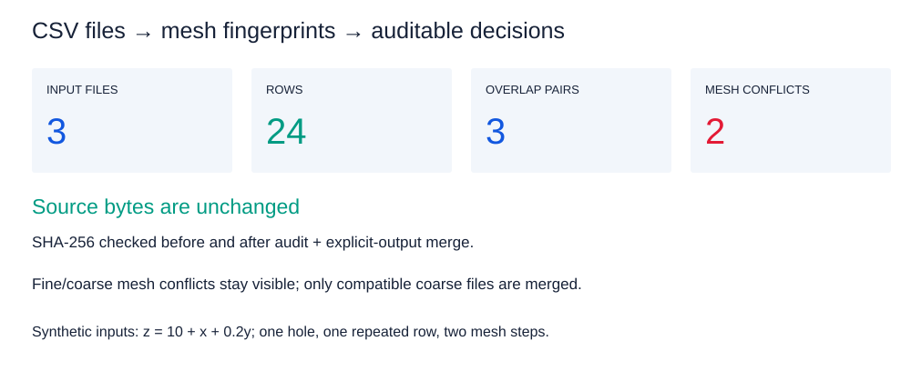
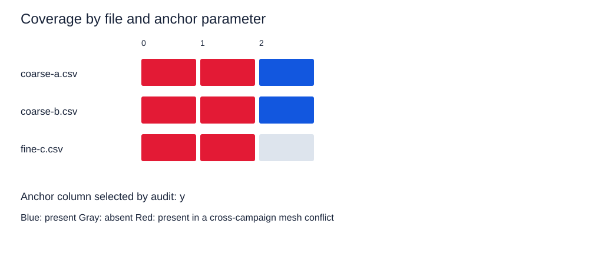
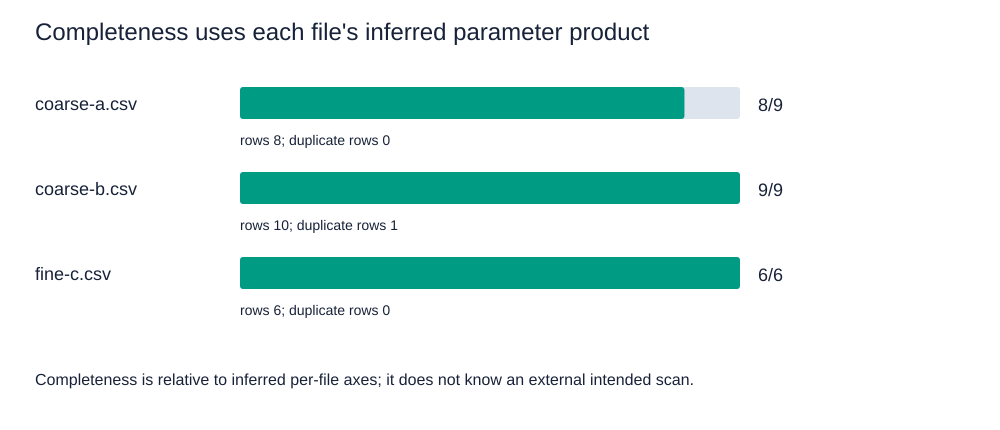
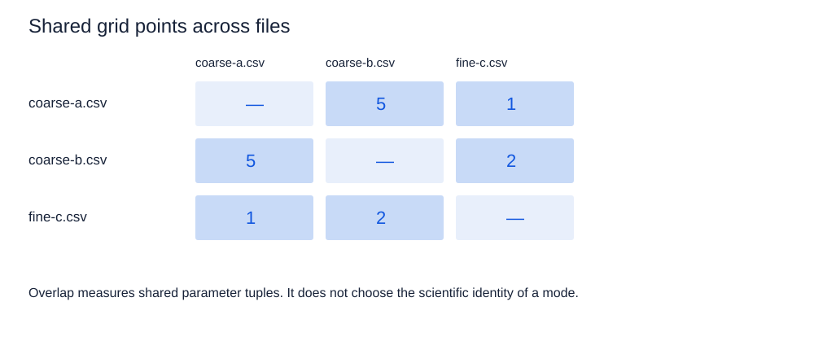

All data are generated by the runnable example. Blue means present; gray absent; red means overlapping mesh campaigns. Completeness is relative to each file’s inferred parameter product. No experiment, solver or unpublished input is used.
Hashes and provenance · Actual audit report · Runnable source · README

Counts come directly from AuditReport. A mesh conflict is not proof of a contradictory measured value.
SVG
This is per-anchor-value coverage from the library, not a voxel completeness map. Red denotes different mesh fingerprints sharing an anchor value.
SVG
The deliberately missing (1,1) site leaves coarse-a at 8/9. The repeated coarse-b row is a separate issue from grid completeness.
SVG
Each off-diagonal count is taken from an OverlapPair in the audit result. Duplicate resolution is demonstrated only on compatible coarse files.
SVG